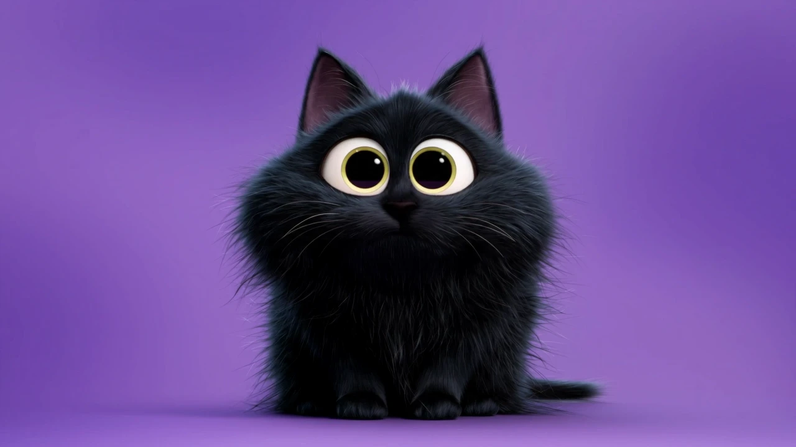

ТРИ ХАРАКТЕРА. ОДНО ДВИЖЕНИЕ.
У каждого —
своя реакция.
Проведите по сцене. Иногда одного взгляда достаточно.
01 / ЛЮБОПЫТСТВО
Любопытный
Всё вокруг заслуживает внимания.

Мышь или палец — направление. Стрелки ← → — точная настройка. Уберите курсор — персонаж вернётся в исходную позу.